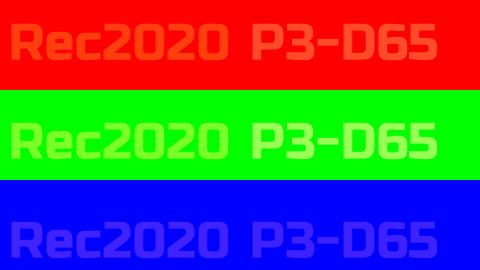

This is comparing two PNG files to ffmpeg converted versions of those files. Ideally you should be able to see rec2020 if your monitor is rec2020, and P3-D65 if you have a P3 display or will not see any text if nothing is displayed. Since most people do not have rec2020 displays, you shouldnt see the rec2020 text at all. The code to generate these files is here. You can reorder the images to help with comparison by drag and drop.
Filtered views:
| -color_primaries 12 = display p3 mp4 | ffmpeg -loop 1 -y -i ps-combined-displayp3-g2.2.png -sws_flags spline+accurate_rnd+full_chroma_int -vf "scale=in_range=full:in_color_matrix=bt709:out_range=tv:out_color_matrix=bt709" -c:v libx264 -t 10 -pix_fmt yuv420p -qscale:v 1 -color_range 1 -colorspace 1 -color_primaries 12 -color_trc 13 ./iccgamut/greyscale-displayp3.mp4 | ||
| display-p3 gamma2.2 png png | |||
| -color_primaries 9 = rec2020 mp4 | ffmpeg -loop 1 -y -i ps-combined-rec2020-g2.2.png -sws_flags spline+accurate_rnd+full_chroma_int -vf "scale=in_range=full:in_color_matrix=bt709:out_range=tv:out_color_matrix=bt709" -c:v libx264 -t 10 -pix_fmt yuv420p -qscale:v 1 -color_range 1 -colorspace 1 -color_primaries 9 -color_trc 13 ./iccgamut/greyscale-rec2020.mp4 | ||
| rec2020 gamma 2.2 png |  |
{kind=link}